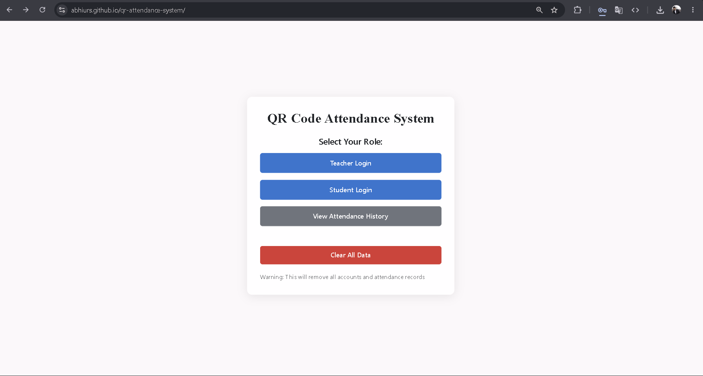
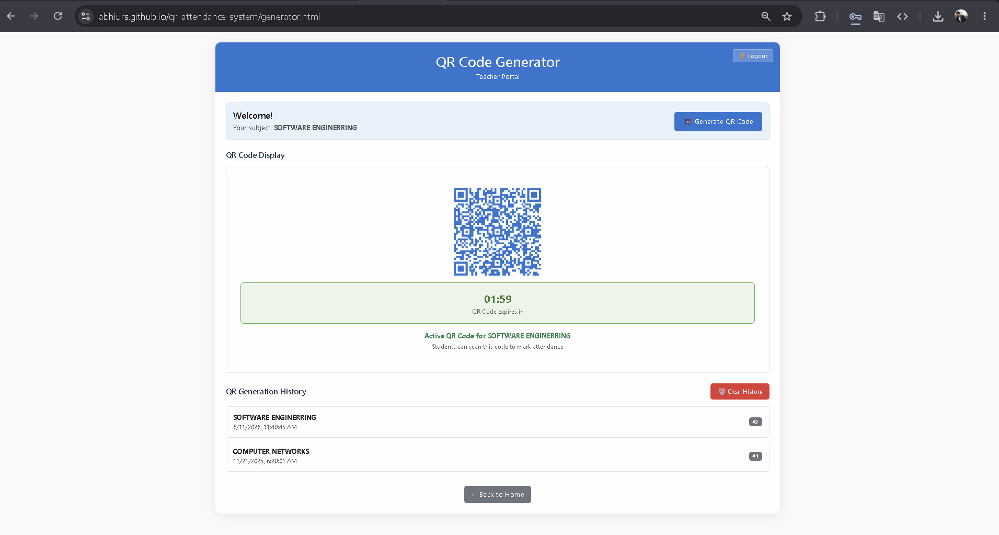
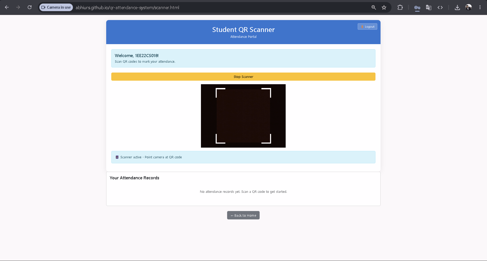
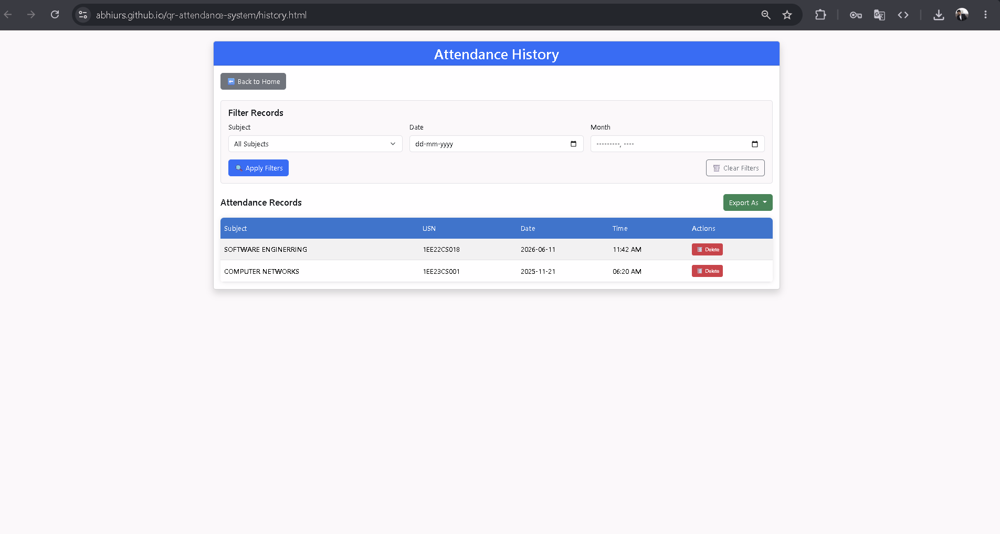

QR Code Attendance Tracker
Developed an online attendance tracking system using QR codes
to simplify and automate attendance management.
The project enables users to scan QR codes for quick attendance
marking while improving efficiency and reducing manual errors.
HTML
CSS
JavaScript
Node.js
MongoDB
QR Code Integration
Key Features
- QR code-based attendance tracking
- Automated attendance management
- Fast and efficient attendance marking
- Modern responsive user interface
- Secure attendance verification
- Real-time attendance updates
Project Screenshots




View on GitHub